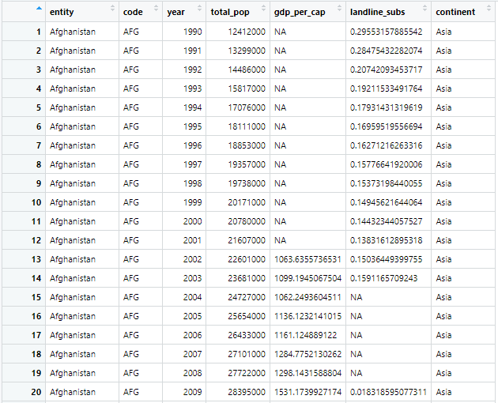
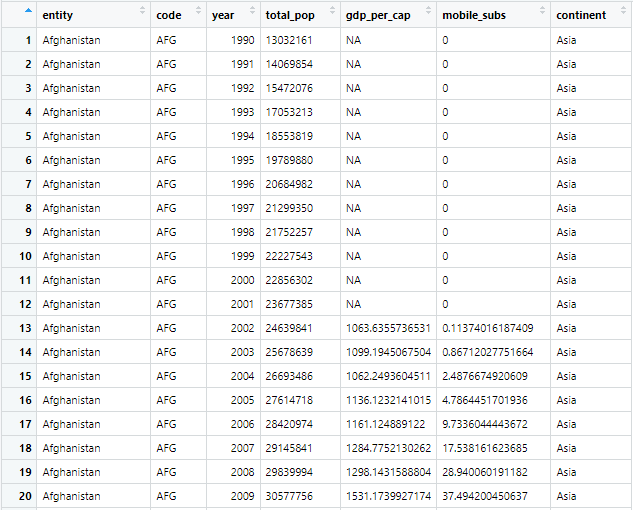

This is a blog on the shiny application made using R.
Overview
At present, everyone wants a prediction application to make predictions in AI mode. Here, this shiny application is very much good to make predictions for mobiles and landlines around the world. This application is well based in making the prediction of this mobile phone and landline users. In this case, there will be a bar chart, stack cart or like that, in this application. This application was made by the R studio with a script. Hence this will be very much effective software in making the analysis with the prediction of mobile phone users. In this case all the sections will represent the positive impact and negative impact of R.
Data Description
Landline Dataset

These are the tabular format of the description of the dataset. In the landline dataset, there are many entities (Fenibo et al. 2019). The first entity is the country name, the second is the country code, the third entity is the increasing year, the fourth entity is the total population of each country in a particular year, the fifth entity is the GDP per capita of a country, the sixth data is the number of subscribers of the telephone users in a year, and in the last entity, there is the continent name of each country.
| Data Column | Descriptions |
|---|---|
| Entity | This column stores the data of countries |
| Code | This column shows the country code |
| Year | This is the increasing year column |
| Total Population | This is the total population of each year |
| GDP per capita | This column shows the country’s GDP per capita for each year |
| Landline subs | In this column, there are the total subscription numbers of telephone users. |
| Continent | In this column, there is the continent name of each country |
Mobile Dataset

In the mobile dataset, there are entities that are the same as in the landline dataset. The first entity is the country name, the second one is the country code, the third one is the year that is used to denote per-year changes, the fourth entity is the total population, which is the per-year population, the next entity is GDP per capita of each year, the sixth entity is the number of mobile subscribers of a particular country in a particular year. The last entity is the name of the country’s continent.
| Data Coulmn | Data Descriptions |
|---|---|
| Entity | This is the country name column |
| Code | This is the country name column |
| Year | This column shows the country code |
| Total Population | In this column, there are increasing years |
| GDP per capita | This is the GDP per capita of every year |
| Mobile subs | The number of mobile subscribers every year is in this column |
| Continent | This column shows the continent of each country |
Data Story
The evaluation of mobile and landline data is a critical aspect of understanding verbal exchange styles and trends. In this evaluation, we will be using RStudio to research cellular and landline data. First of all, import the essential libraries and information units into R Studio. The information units for each cell and landline statistics might be in CSV layout. Use the imput.csv() feature to import the record sets into R Studio (Harrer et al. 2021). As soon as the records units are imported, merge them with the use of the merge() characteristic. This could allow us to examine and evaluate the statistics units. Subsequently, some fundamental information is carried out descriptive information at the merged statisti

This could encompass calculating the suggest, median, popular deviation, and range for each cell and landline facts. Histograms and box plots are created to visualize the distribution of the facts. After finishing the descriptive records, some inferential statistics are carried out to test for good-sized differences between cellular and landline statistics (Massikunta et al. 2022). This will consist of carrying out t-exams and ANOVA assessments to determine if there are any substantial variations in name period, call frequency, and speak-to-type between cellular and landline records.

Eventually, visualizations to assist us in better understanding the facts are created. This can include growing scatter plots and warmth maps to visualize the connection between exclusive variables within the data set (McGuinness and Higgins, 2021). Bar charts and pie charts are created to visualize the distribution of call types and contact frequencies. Common, reading cell and landline facts in R Studio can offer valuable insights into conversation styles and trends.

Via performing descriptive and inferential data, the similarities and variations can be highly apprehended among mobile and landline statistics. Visualizations can also help us to better understand the records and talk about our findings to others.

By that time mobile user numbers are increasing and landline user numbers are decreasing. This app shows the data in graphical format on many kinds of graphs (Ramachandran and Tsokos, 2020). This app will help to see the downfall of landlines and the growth of mobile users. In the future one can add many features that increase the potentiality of the app.
Advantages
This shiny app analyzes the results of the dataset that is given to it.
Here a landline dataset and a mobile dataset are given. In those datasets, there are many numbers of data (Sishodia et al. 2021). These data sets are used in this app.
The app mainly analyzes the data of landlines in different countries in different years and the mobile dataset has the data of the numbers of different countries in different years.
Here the analysis is about the reduction or increase of mobile users and landline users in different countries. This will help to forecast the data about the landline users and mobile users.
Conclusion
The “Shiny” Package in R is used for the construction of a website in Quarto. It makes it possible to create a website that is easily interactive and dynamic web pages. Page layout is used for the interactive documents and it is narrated and dispersed by the components of the Shiny and is utilized to create a whole blog website in R. Some can be hybrid and it can be imagined as a sidebar on the left side that contains inputs.
Reference List
Journals
Fenibo, E.O., Ijoma, G.N., Selvarajan, R. and Chikere, C.B., 2019. Microbial surfactants: The next generation multifunctional biomolecules for applications in the petroleum industry and its associated environmental remediation. Microorganisms, 7(11), p.581.
Harrer, M., Cuijpers, P., Furukawa, T. and Ebert, D., 2021. Doing meta-analysis with R: A hands-on guide. Chapman and Hall/CRC.
Maddikunta, P.K.R., Pham, Q.V., Prabadevi, B., Deepa, N., Dev, K., Gadekallu, T.R., Ruby, R. and Liyanage, M., 2022. Industry 5.0: A survey on enabling technologies and potential applications. Journal of Industrial Information Integration, 26, p.100257.
McGuinness, L.A. and Higgins, J.P., 2021. Risk‐of‐bias VISualization (robvis): an R package and Shiny web app for visualizing risk‐of‐bias assessments. Research synthesis methods, 12(1), pp.55-61.
Ramachandran, K.M. and Tsokos, C.P., 2020. Mathematical statistics with applications in R. Academic Press.
Sishodia, R.P., Ray, R.L. and Singh, S.K., 2020. Applications of remote sensing in precision agriculture: A review. Remote Sensing, 12(19), p.3136.